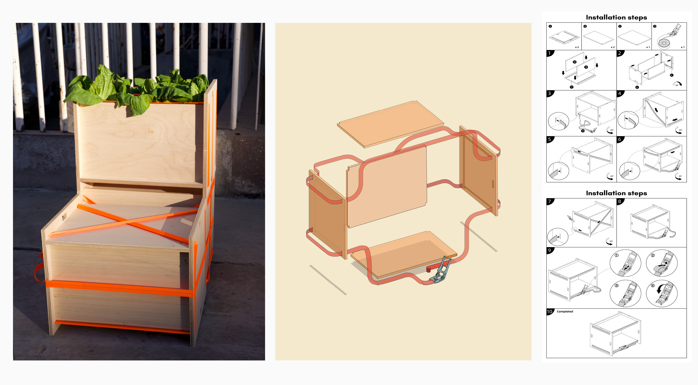

CURRENTLY ON TOUR & NEWS
Ideal Home
Ars Electronica, ICA VCU, Accent Sisters
Read Press on Cultbytes
|
e-flux
The Graceful Site
7th The Wrong Biennale
Download / Play
Collision at a Distance
远距离碰撞

Simulation view

Animation
Collision at a Distance, 2026. A simulation work in progress.
Ideal Home
理想之家
Installation view
Detail

Ideal Home is an extended-reality (XR) narrative project that explores how immigrant experiences and the evolving concept of home are reshaped through emerging technologies. Central to the story is a ghostly AI avatar that drifts through layered interfaces, landscapes, symbols, and code. Combining generative AI, immersive XR environments, and collaborative writing, the project constructs a fragmented, non-linear story world shaped by multiple voices. The artist invited immigrant writers to co-create a text archive based on their experiences of longing, memory, and displacement. A fine-tuned GPT-4 model then rewrote a unified script, blending distinct writing styles and transforming cultural symbols into something unexpected. By embedding the script into a game engine, the project blurs the line between oral history and generative fiction, offering an alternative mode of engagement. The AI avatar acts as a narrator and emotional guide, accompanying the player through flickering memory objects, dreamlike spaces, and cultural echoes. Ideal Home becomes a speculative space where collective memory and machine intelligence co-author a new language for belonging.
The Graceful Site 优美地高于生活
Installation view

Video documentation
A speculative fable
A minimal theater within a game engine foretells the failed future of automation and sketches an alternative trajectory for artificial intelligence. The story is set in an abandoned Bitcoin mining facility: a post-human worksite where the cryptoeconomic system has already collapsed. The laborers are gone, yet technological remnants remain, and the environment slowly reconfigures into a new ecology.
The objects left behind take the stage, performing within an improvisational structure: spirit-channeling ravens, connected to the souls of former workers, argue fervently over the promises and perils of decentralized economies, the vanishing of labor, and the endless acceleration of capitalism. From the debris of the mining company, a low-hovering drone circles the room in perpetual surveillance. Nearby, clusters of idle mining machines gather into swarms. The code once dedicated to relentless hash collisions mutates into transmissible genetic information, driving them to move, to leap, to stammer rudimentary words, and eventually to evolve into sentient entities.
This theater is shaped by the observer's gaze. Continuously deconstructed and recomposed, it unfolds as a live, autonomous program governed by its own internal logic: a performance without end, a system endlessly rehearsing itself.
Say Sense is Not Everything

sensenoteverything.zip
A collaborative web publication and project.
Polyphonic Shimmering

shimmering.world
A collaborative web publication exploring polyphonic and shimmering forms of expression.
HyperDog

Installation view
Video documentation
Based on the observation of computer language and general linguistics, this project aims to explore the similarities and differences between the narrative methods for constructing objects. Like ordinary languages, computer languages link the sound-image and concept when constructing objects to refer to the word symbol of concept and form a narrative in conjunction with the picture form. The difference is that the binary nature of computer system constructs objects in a way that is different from text-constructed objects.
The project is composed of sculpture, video and interactive software. Three screens are embedded in the sculpture frame of the oracle bone script character "dog" (犬) to show the process of language as sign in constructing objects, the interactive interface of Raspberry Pi and the computer constructing process — so that the audience can be immersed in the process of building objects with general linguistic and programming code at the same time, and feel the connectivity and cooperation between computer language and common linguistics in the process of narration.
The Green Common

Installation view
Video documentation
This project focuses on the spontaneous formation of community interactions during the COVID-19 outbreak in the city of Shanghai in terms of information and knowledge sharing and mutual aid efforts. I chose to use cheap and lightweight materials to construct a civil society based on community interaction with a modular design.
The planting box/chair, made by cutting plywood, is assembled by tying a single cargo strap with ratchets. The luggage strap, which can withstand more than 700 kg, allows you to construct a planting box and a chair without the use of screws, bonds or any hardware. It is easy to ship and assemble.
Teaching
OOPS! (Off-Purpose Software)
A 7-week class about using serious tools unseriously. Students explore Google Workspace (Docs, Sheets, Slides, Forms) and push it to the edge of breakdown — writing Apps Script as revisionist memoir, using autofill as a timing device, and finding other methods of misuse through scripting or overly literal obedience.


Writing & Research
From Ink to Code, From Binary to Boundless Reality—Until All Returns to Emptiness
This thesis explores the entangled relationship between language, memory, and technology through the lens of immigrant experience. Moving from programming to visual storytelling, I investigate how dyslexia, bilingualism, and cultural displacement have shaped my ways of reading, writing, and coding.
Beginning with personal reflections on switching from computer science to art, I trace how code offered a form of clarity and expression where written language had once failed me. Yet as I ventured into real-time simulation and XR storytelling, I encountered new forms of mistranslation—where narratives dissolved, mutated, or resisted coherence altogether.
Through a series of experiments in code-driven art, culminating in the XR project Ideal Home, I examine the possibilities and limitations of machine translation for human emotions. By fine-tuning GPT-4 on collaboratively gathered immigrant stories, Ideal Home stages an encounter between fractured memories and algorithmic interpretation, inviting participants to wander through a ghostly landscape of drifting texts and partial recollections.
Drawing inspiration from thinkers like Gayatri Spivak, Svetlana Alexievich, and Pauline Oliveros, I propose mistranslation not as failure but as a generative space—a terrain where hybrid identities and unfinished memories can unfold. In a world shaped by linguistic and technological thresholds, perhaps an ideal home is not a destination but a moment of shared uncertainty: a fleeting agreement between human and machine to continue searching, even when no final understanding is possible.
The Endless Barrier in Reading

Speaking Across Emptiness: On Translation, Self, and Silence

"Earth's Rotation Vertigo"

Lab Streaming Layer Framework Research
Published research on the Lab Streaming Layer framework, exploring real-time biosignal data in XR environments.
.png)
I am a Chinese artist and writer, currently based in the United States. I am interested in the intersection of art, literature, and technology.
My work often explores themes of identity, culture, and the human experience. I consider myself an experimental artist who explores live simulation, digital storytelling, artificial intelligence, and the methodology of programming languages.
My practice explores the complexity of emerging technology and computation as an alternative narrative container.
My work has been exhibited internationally at venues such as Ars Electronica (Linz, Austria), Black Brick Project (NYC, US), Instinc (Singapore), ICAVCU (Richmond, VA), and others.
Faculty at VCU Arts & VCU Kinetic Imaging.
Education
MFA, Kinetic Imaging, Virginia Commonwealth University School of the Arts, Richmond, VA, USA.
BS, Computer Science and Minor in Mathematics and Arts, University of Delaware, Newark, DE, USA.
Selected Exhibition
Pleasure Engineered, Accent Sisters, New York City, NY
Odds and Ends Film Festival, Light House Studio, Charlottesville, VA
7th The Wrong Biennale: V. Renewal, Screensaver section, online exhibition
Not Here, Not Now, Gallery 130, University of Mississippi, Oxford, MS
2025 SECAC Juried Exhibition, SITE1212, Cincinnati, OH
Ars Electronica Festival, PostCity, Linz, Austria
Computation Rehearsal, INSTINC, Singapore
MFA Thesis Exhibition, Institute for Contemporary Art, Richmond, VA
Phantom Dimensions, Black Brick Project, Brooklyn, NY
Unsupported Format, Seipel Gallery, Richmond, VA
WHEREABOUTS: VCUarts MFA Candidacy Exhibition, Stony Point Fashion Park, Richmond, VA
K is for Komputer, Murry N. DePillars Gallery, Richmond, VA
Lectures / Panels / Talks
Presenter, 15th International Conference on Applied Human Factors and Ergonomics (AHFE 2026), Istanbul, Türkiye
Guest Artist Lecture, VCUarts Kinetic Imaging, Qatar
Generative AI's Role in Transforming Creative Practices and Cultural Narratives, SECAC 2025, Cincinnati, OH
Artist Talk, Pechakucha by VCUarts Kinetic Imaging, Richmond, VA
Invited Speaker, Student Fellows Research Presentation, AI Futures Lab, Virginia Commonwealth University, Richmond, VA
Artist Talk, Pechakucha by VCUarts, Richmond, VA
Awards / Grants
AI Futures Lab Fellowship, Virginia Commonwealth University, Richmond, VA
Graduate Research Grant, Pollak Society, Richmond, VA
VCUarts Graduate Assistantship, Richmond, VA
National Youth Designer Competition Finalist, China Industrial Design Association 2024, Online
VCUarts Graduate Assistantship, Richmond, VA
VCUarts Graduate Assistantship, Richmond, VA
Publication
AHFE 2026 17th International Conference on Applied Human Factors and Ergonomics. "Reframing Immigrant Narratives through AI-Assisted Co-Creation and Immersive Experience: A Case Study of Ideal Home." May, 2026
From Ink to Code, From Binary to Boundless Reality—Until All Returns to Emptiness. MFA Thesis, Virginia Commonwealth University, Kinetic Imaging, May 2025. DOI: 10.25772/82DT-BM43 →
"Speaking Across Emptiness: On Translation, Self, and Silence." In Say Sense is Not Everything, ed. Meg Miller. Book and Website, May 2025. Read →
"The Endless Barrier in Reading." In BAD SENSE, ed. Meg Miller. Substack, Apr 2025. Read →
"Earth's Rotation Vertigo (地球自转眩晕症)." In Polyphonic Shimmering, ed. Meg Miller. Book and Website, May 2024. Read →
Springer Nature. "A Scoping Review of the Use of Lab Streaming Layer Framework in Virtual and Augmented Reality Research." Virtual Reality, May 2023. DOI: 10.1007/s10055-023-00799-8 →
Academic Position
Adjunct Professor, Virginia Commonwealth University School of the Arts
3D Computer Art; Creative Code and Electronics, Department of Kinetic Imaging
Assistant Teacher, School for Poetic Computation, New York City
OOPS! (Off-Purpose Software)
Research Assistant, University of Missouri
Immersive Media Research Projects, School of Visual Studies
Adjunct Professor, Virginia Commonwealth University School of the Arts
Creative Code and Electronics, Department of Kinetic Imaging
Adjunct Instructor, Virginia Commonwealth University School of the Arts
Creative Code and Electronics, Department of Kinetic Imaging
Teaching Assistant, Virginia Commonwealth University School of the Arts
3D Computer Art, Creative Code and Electronics, Sound Art, Department of
Kinetic Imaging
Research Assistant, University of Delaware
Human-Computer Interaction Laboratory, Department of Computer & Information Sciences
Contact